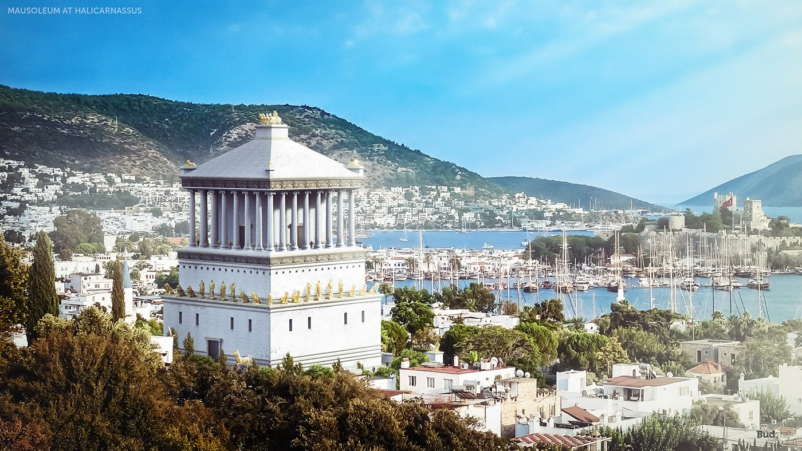

Maravilla N°1: Jardines colgantes de Babilonia
La construcción de los jardines colgantes de Babilonia se atribuye al rey Nabucodonosor II en el siglo VI a.C. para su esposa Amitis, explica un artículo de la Enciclopedia Iberoamericana.
Maravilla N°2: Gran Piramide de Guiza
Construida alrededor del 2500 a.C., la Gran Pirámide de Guiza es la única de las siete maravillas que aún existe. Tal como indica la Enciclopedia Britannica, esta construcción está erigida sobre una meseta rocosa en la orilla occidental del río Nilo, cerca de Al-Jīzah (Guiza) en el norte de Egipto. Este monumento fue edificado como tumba para el faraón Keops. Originalmente, la pirámide tenía una altura de 146.5 metros, aunque hoy es algo menor debido a la erosión y el expolio, señala la Enciclopedia Iberoamericana.
Maravilla N°3: Estatua de Zeus en Olimpia
Creada por el escultor Fidias en el siglo V a.C., esta estatua representaba al dios Zeus sentado en su trono, señala Iberoamericana. Según Britannica, fue una inmensa estructura de 12 metros de alto revestida con placas de oro y marfil que se encontraba en el templo de Zeus en Olimpia, la antigua ciudad griega donde se celebraban los Juegos Olímpicos. Tal como indica la plataforma Britannica, “el descubrimiento en la década de 1950 de los restos del taller de Fidias en Olimpia confirmó la fecha de la estatua en aproximadamente el 430 a.C. El templo fue destruido en el 426 d.C., y la estatua, de la cual no sobreviven copias exactas, puede haber sido destruida en ese momento o en un incendio en Constantinopla (actual Estambul) unos 50 años después”.

Maravilla N°4: Faro de Alejandría
El Faro de Alejandría fue construido entre los años 300 a.C y 280 a.C. por Sóstrato de Cnido, arquitecto e ingeniero griego. Se ubicaba en la isla de Faro, frente a la ciudad de Alejandría, en Egipto. Con una altura de 134 metros, fue el segundo edificio más alto del mundo antiguo. Si bien resistió varios terremotos, colapsó en el siglo XIII, expresa la Enciclopedia Iberoamericana.

Maravilla N°5: Mausoleo de Halicarnaso
Este monumento funerario fue la tumba de Mausolo, un rey de Halicarnaso (una antigua ciudad dórica fundada por los griegos), y fue construido en el siglo IV a.C. en la región de Asia Menor. El mausoleo, hecho de mármol blanco, alcanzaba los 45 metros de altura y estaba decorado con relieves de los mejores escultores griegos de la época. Se cree que fue destruido por un terremoto entre los siglos XI y XV y sus restos se reutilizaron para construir edificios locales. “Entre los fragmentos de escultura del Mausoleo que se conservan en el Museo Británico figuran un friso de griegos y amazonas luchando y una estatua de 3 metros de altura, posiblemente de Mausolo”, completa Britannica.
Maravilla N°6: El Coloso de Rodas
Esta estatua de bronce de 33 metros de altura, que representaba al dios Helios, fue construida por por el escultor griego Cares de Lindos en el año 293 a.C. en la isla griega de Rodas. Según la Enciclopedia Iberoamericana, se erigió para conmemorar la victoria sobre el invasor Demetrio Poliorcetes, uno de los reyes de la antigua Macedonia.
Maravilla N°7: El Templo de Artemisa en Éfeso
El Templo de Artemisa en Éfeso se construyó en el siglo IV a.C. en Éfeso, actualmente en el oeste de Turquía. Era conocido por sus enormes dimensiones y elaborados relieves. Medía 115 metros de largo y 55 de ancho, y estaba sostenido por 110 a 137 columnas de mármol de 20 metros de altura. Fue destruido por una invasión ostrogoda (pueblo de origen germánico) en el siglo III d.C. y, posteriormente, por cristianos tras la conversión del Imperio Romano al cristianismo bajo el emperador Teodosio.